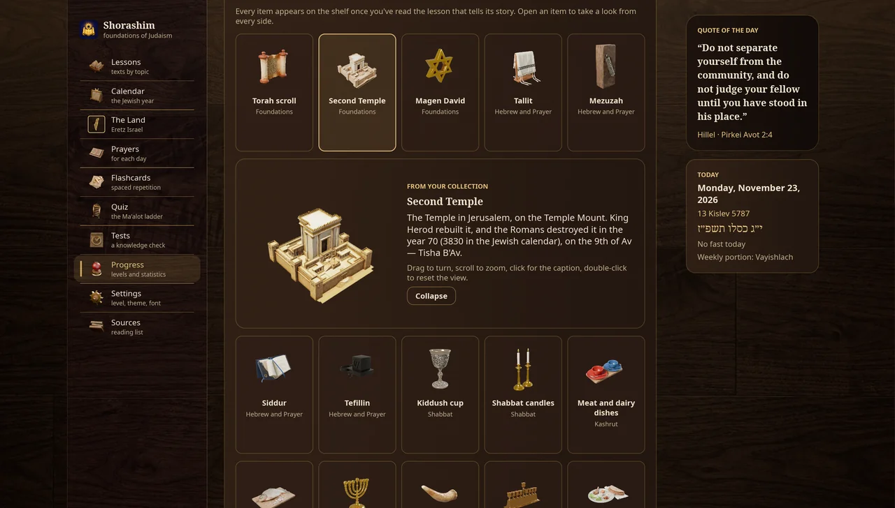
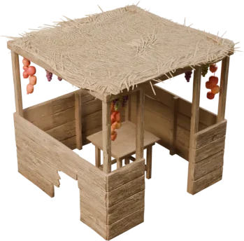
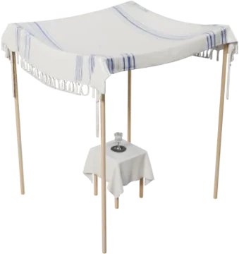
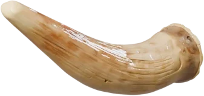
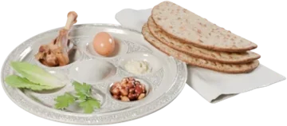
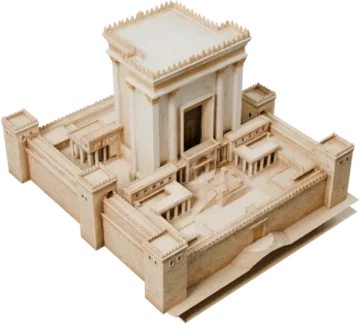
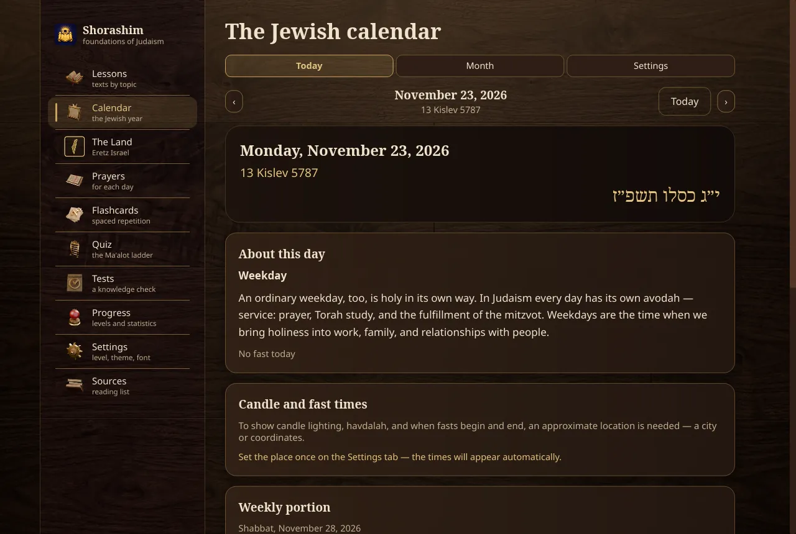
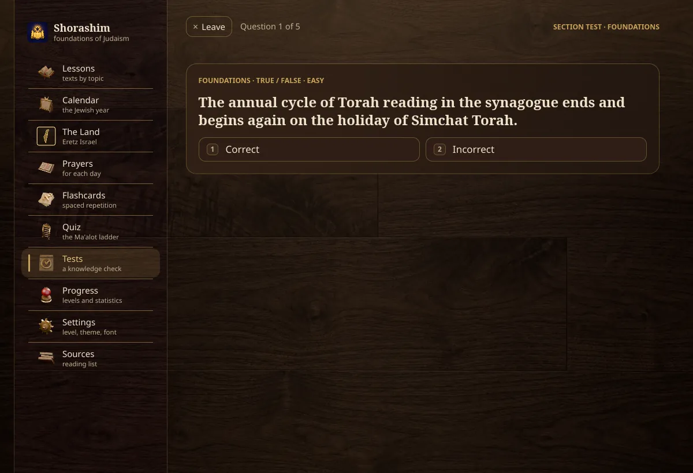

Уроки по разделам
Восемь разделов — от основ веры до бейт-дина, уроки по 5–10 минут. Разделы открываются один за другим, по мере учёбы.
Бесплатно · офлайн · открытый код
Пустите корни. Спокойный спутник, который шаг за шагом ведёт по основам иудаизма и по дороге к гиюру и собеседованию в бейт-дине.
Windows · macOS (Apple Silicon) · Linux


Откройте Второй Храм и поверните его мышью — дворы, жертвенник, Святилище на Храмовой горе. Перетаскивайте, чтобы вращать, крутите колесо, чтобы приблизить, двойной щелчок возвращает вид.
«Не отделяйся от общины и не суди ближнего, пока не окажешься на его месте.»Гилель · Пиркей Авот 2:4
Шорашим идёт рядом: короткие уроки, честная практика и те вопросы, которые на самом деле задают в бейт-дине, — чтобы отвечать своими словами, а не по заученному тексту.
Восемь разделов — от основ веры до бейт-дина, уроки по 5–10 минут. Разделы открываются один за другим, по мере учёбы.
Каждый урок можно читать по ортодоксальному, консервативному (Масорти) или реформистскому пути. Каждое течение изложено его собственными словами, с равным вниманием.
Сегодняшняя дата по еврейскому календарю, смысл дня, недельная глава Торы, праздники и посты, время зажигания свечей для выбранного места.
Интервальные повторения — 1 → 3 → 7 → 14 → 30 дней — возвращают карточку как раз перед тем, как вы её забудете.
Пятнадцать ступеней знания — от простых вопросов к трудным, с подсказками, когда они нужны.
Вопросы, которые задают раввины, что стоит за ними, практика с выбором ответа и репетиция вслух. Не готовые ответы, а понимание.
Тесты по разделам и общий экзамен, спокойный разбор ошибок, цель на день, серии дней, уровни и значки.
Храм, Котель, свиток Торы, сукка, хупа, шофар и другие появляются в коллекции по мере учёбы — каждый можно повернуть и рассмотреть.
Шма и другие молитвы: текст на иврите, перевод и транслитерация — учите слова глазами и вслух.
Тихая инструментальная музыка для учёбы, если вам так больше нравится. По умолчанию выключена — включить можно в настройках.
Эрец-Исраэль — наследие, которое Тора даёт еврейскому народу, Иерусалим — вечная и неделимая столица, а Государство Израиль — возвращение еврейского народа домой.
Без учётной записи, без интернета, без рекламы и без слежки. Ваш прогресс остаётся на вашем компьютере.
Каждый предмет появляется на полке, когда вы прочитали урок, в котором рассказана его история.
 Котель
Котель Менора Храма
Менора Храма Свиток Торы
Свиток Торы
Сукка
Хупа
Шофар
Пасхальное блюдо
Второй Храм





Бесплатно, версия 1.0.0. Без учётной записи и без интернета.
Пока мы проверили Шорашим только на Windows. Сборки для macOS и Linux тоже выложены, но мы их ещё не проверяли.
Шаги установки для каждой системы — в README. Все выпуски: GitHub Releases.
Все материалы курса должны быть проверены раввином. Шорашим помогает в учёбе и не заменяет ни учителя, ни общину. Если вы раввин или внимательный читатель и видите, что нужно исправить, пожалуйста, откройте issue — список для проверки есть в RABBI-REVIEW.